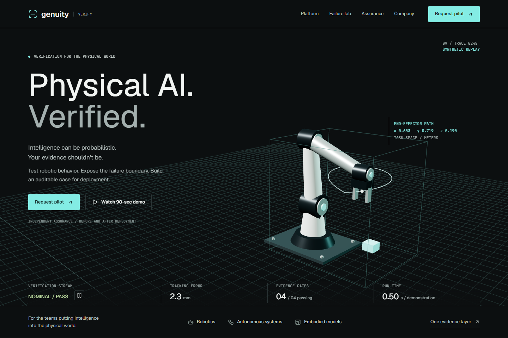
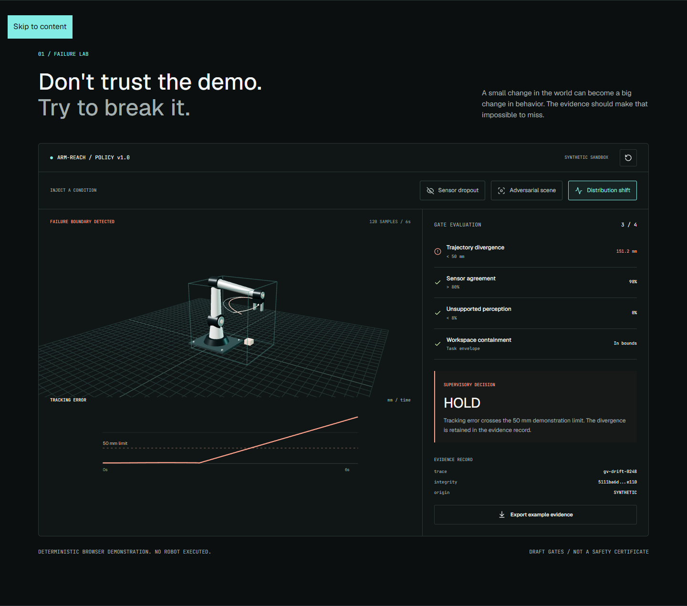
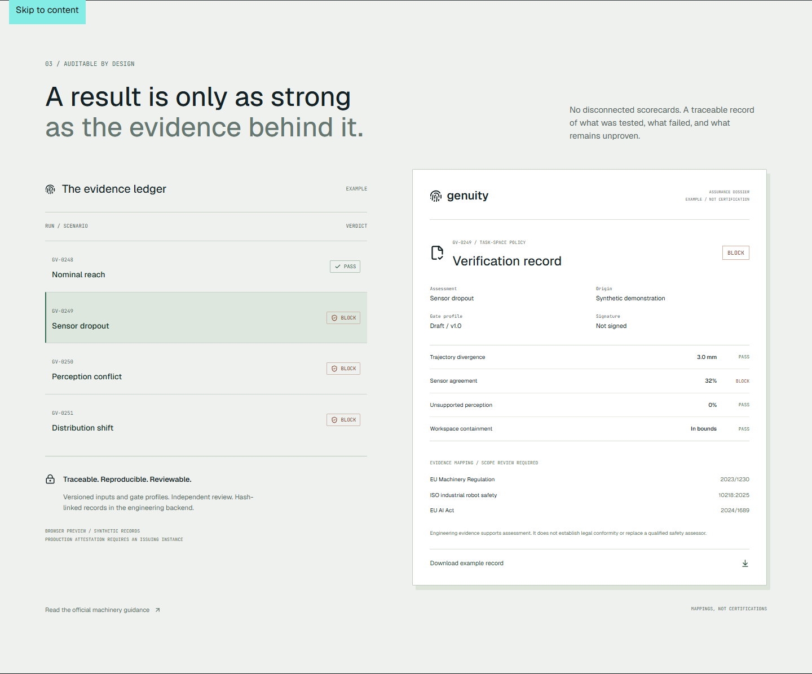

Independent verification, validation, and governance for Physical AI. Policy in, trust scorecard out, every run hash-chained into a provenance ledger. Built by Adari Karthikeya (Genuity IO).
Open the live scorecards Source repo
These are real outputs captured from the engine (8 Genesis metrics, deterministic fixtures, hash-chained ledger), rendered as static pages so anyone can inspect them with no install.



git clone https://github.com/AK47-1845/vv-engine-frontend.git cd vv-engine-frontend/stdlib-mvp # Windows: double-click START.cmd, then open http://127.0.0.1:8000/ # Any OS: python backend/server.py (stdlib only, works offline)
Tests: python tests/test_scorecard.py (10 tests, stdlib unittest). Full Next.js pitch site + FastAPI backend: see repo README.
Genuity IO, 2026. Questions: open an issue on the repo.